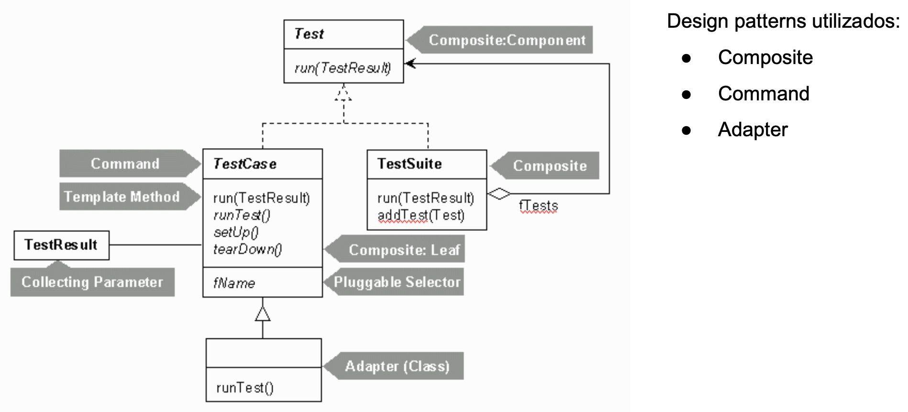

Revisão Framework
Definição: Teste unitário examina o comportamento de uma unidade distinta de trabalho:
- Métodos
- Classes
- Componentes de software
Testes são orientados a contratos de API: contrato de API é um acordo formal entre a unidade comportamental e quem chama, definido na forma:
Dado X como entrada, tem-se Y como saída
Requisitos de xUnits
- Testes devem executar independentemente dos demais testes unitários:
- Cada teste deve ser uma instância da classe de teste
- Carregado por um loader diferente
- Framework deve detectar e reportar erros, teste por teste:
- Para cado erro deve ser reportado o contexto em que ocorreu
- Deve ser fácil definir quais testes serão executados
- Deve haver algum mecanismo capaz de informar ao loader quais métodos de teste a serem executados
JUnit é um framework
"A framework is a semi-complete application" (Martin Fowler)
Sendo JUnit um framework de teste unitários, como "completa-lo"? - Escrevendo testes - Agrupando testes Como executar as funcionalidades do framework JUnit? - Executando testes - Diversos modos de execução são oferecidos pelo JUnit
Projeto estrutural - JUnit 4

Test
- Define o tipo mais genérico (mais alto na hierarquia) das classes que compões a estrutura do Junit
- Desempenha o papel Component do padrão Composite.
- Especifica o método run (ie. define a assinatura) que será sobrescrito por suas subclasses.
TestCase
- Um caso de teste é uma instância da classe TestCase
- É a classe folha (leaf) do padrão Composite
- Define a estutura de métodos a serem implementados para cada teste
- SetUp
- TearDown
- RunTest
- Implementa o padrão TemplateMethod no método run
TestSuite
- Desempenha o papel composto do padrão Composite
- Própria implementação do método run (herdado da classe Test) consiste em chamar o método run de cada um dos objetos que compõem a suíte de testes.
- Método addTest é chamado para adicionar instâncias de qualquer subclasse de Test à suíte de testes.
TestResult
- Uma instância dessa classe é associada a cada um dos testes, através do parâmetro TestResult definido na assinatura do método run.
- É o responsável por capturar os resultados da execuções dos testes do caso de testes.
Testes Simples
Estrutura típica de testes em JUnit
- Suíte de testes
- Caso de teste
- Testes
- Asserções
- Testes
- Caso de teste
Cada nível, nessa hierarquia, é uma composição de elementos do nível da camada imediatamente inferior. - Exceto suíte de testes
Testando Exeções
- Testar se a unidade executa conforme esperado
- Testar se a unidade se comporta adequadamente em situações de falhas também é muito importante. 2 formas de testar o lançamento de exceções:
- Teste simples de lançamento de exceções → verifica apenas se um objeto de exceção foi recebido pelo teste, sem considerar seus detalhes.
- Teste profundo de lançamento de exceções → verifica:
- O tipo de exceção lançada é, de fato, o tipo que se espera ser lançada;
- Verifica se a mensagem de exceção é a que se espera;
- Verifica o estado do objeto que lançou a exceção.
Categoria de Testes
Categoria de testes são os rótulos que atribuímos aos testes que criamos.
- Em JUnit, cada categoria é definida através de uma interface JAVA
- Podem ser incluídas ou excluídas dos casos das suítes de teste
- Definidos por Categories.class
2 categorias:
- FuncionalidadesTestes → para testes de funcionalidades sendo implementadas no projeto
- ExcecoesTestes → para testes de lançamentos de exceções
- Criação / execução de suítes de testes com base nas categorias
Testes com Timeout
Úteis para testar unidades que não podem demorar muito tempo para executarem ou que possuem tempo limite de resposta bem definido.
Duas maneira de definir timeout:
- Para cada caso de teste isoladamente
- Adiciona o tempo em milissegundos na anotação @Test
- Para todos os métodos do TestCase ou TestSuite
- Define-se uma regra através da anotação @Rule
- Em seguida instancia-se um objeto de Timeout.class
Ignorando testes
O método de teste anotado com @Ignore não é considerado durante a execução do TesteCase ou TestSuite.
- Útil para marcar testes a serem implementados durante o desenvolvimento usando TDD.
- Testes isolados não influenciarão na prática TDD (barras verdes / vermelhas).
Teste Parametrizado
- Testes parametrizados são muito úteis para testar o comportamento de uma única unidade, cujas saídas esepradas variam conforme as entradas providas.
- Ao invés de escrever um teste para cada entrada e saída, escrevemos apenas um teste, e vários pares de parâmetros.
- Para cada par (entrada e saída), um teste será executado